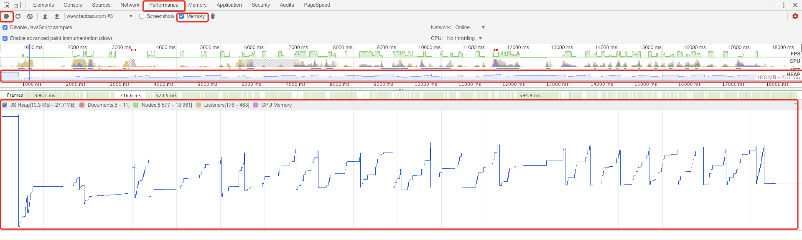

1. accumulation
1.1. 平常工作中的积累
内存泄漏：指程序中己动态分配的堆内存由于某种原因程序未释放或无法释放，造成系统内存的浪费，导致程序运行速度减慢甚至系统崩溃等严重后果。 资料说闭包会造成内存泄漏，要减少使用，其实我们运用闭包的目的就2个： 变量私有化；延迟变量生命周期，这样是不错操作内存泄漏的。 查看内存泄漏的办法：
- 打开 Chrome 浏览器开发者工具中的 performance 面板
- 选项中勾选 Memory 选项
- 点击左上角录制按钮（实心圆状）
- 在页面上进行正常操作
- 一段时间后，点击 stop 看面板上的数据 
- 如果是像上面这样平稳的，就表示内存没有泄漏，如果是像下面这样就是内存泄漏

- 下方内存图点击对应的内存异常处，然后点击下方面板内的Event Log面板，可以查看代码内具体发生了什么，来接触引用